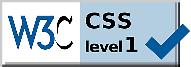
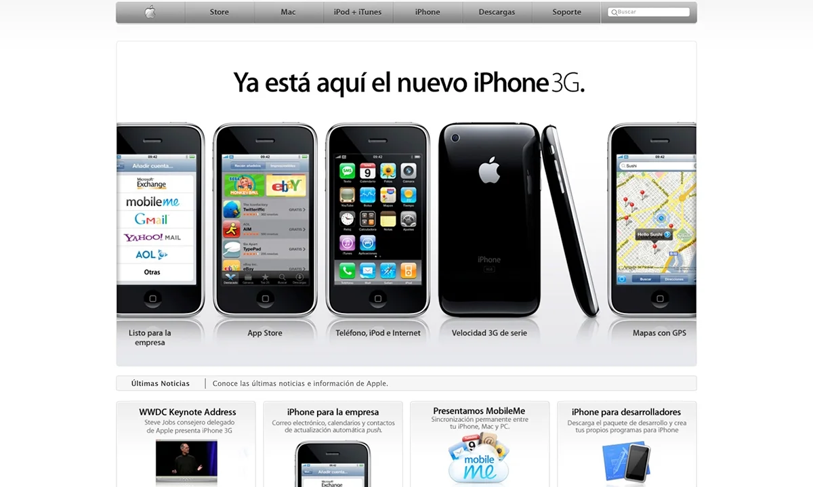

CSS
Historia.
Sintaxis de CSS.
Propiedades de CSS.
¿Qué es CSS?
El CSS (Cascading Style Sheets) como en español se diria Hojas de Estilo en Cascada, es el lenguaje de programación más utilizado para el diseño de sitios web. La razón por la que se llama Hojas de Estilo en Cascada es porque las características se aplican mediante
reglas que siguen un sistema de prioridades de arriba a abajo. CSS es creado para controlar el aspecto o presentación de los documentos definidos con HTML del sitio web y, permite crear páginas de una manera más exacta y aplicarles estilos (colores, margenes, formas, tipo de letras, bordes, etc.) esto hace
que se tenga mayor control de los resultados finales. Para crear páginas web complejas, CSS es el mejor método para separar el contenido de la presentación, esto hace que les permita modificar la apariencia de los sitios web rápidamente, fácilmente y cuando se necesario.
Otros beneficios que puede tener la separación del contenido de las páginas web y la forma de presentación de estas son: tener un sitio web responsivo, evitar hacer archivos demasiado pesados, más flexibilidad y control de las especificaciones del sitio web, simplifica la creación de
la página, trabajar con estándares y separar la estructura de la presentación teniendo un trabajo más definido.
En resumen, al crear una página web lo primero que se utiliza es el lenguaje HTML para marcar los contenidos, en otras palabras, para designar la función de cada elemento dentro de la página. Y una vez creados los contenidos, se utiliza el lenguaje CSS para definir el aspecto
de cada elemento.
La sintaxis en CSS es diferente a la de HTML. HTML usa flechas, mientras que CSS usa llaves y punto y coma al final de cada línea.
¿Cómo usar CSS?
Básicamente, existen tres formas de escribir CSS:
- Hojas de Estilo Internas
Usar una hoja de estilo interna significa que cualquier estilo que vaya a crear se codificará directamente en el HTML de esa página en particular, a través de una etiqueta Style que contendrá el código CSS.
Aunque este estilo nos puede ayudar en ciertos casos particulares, como ya se menciono arruinamos la posibilidad de tener el código CSS en un documento a parte, pudiendo reutilizarlo y enlazarlo desde otros documentos HTML.
- Hojas de Estilo Externas
Utilizar una hoja de estilo externa significa crear un archivo .css y luego usarlo en su página HTML según sus requisitos. En el encabezado de nuestro documento HTML, en el bloque <head></head>, podemos incluir una etiqueta <link> con la que
establecemos una relación entre el documento HTML actual y el archivo .css que indicamos en el atributo href. Al hacer esto, los navegadores sabrán cómo utilizar los estilos que se encuentran en el .css al lado del archivo .html activo.
- CSS en línea
Utilizar CSS en línea significa que cada estilo de contenido estará en elementos HTML. Se utiliza para un área pequeña y cuando tienes pocos requerimientos porque solo afectará a un elemento. Se trata de hacerlo directamente, a través del atributo style de la propia etiqueta donde
queramos aplicar el estilo, colocando ahí las propiedades CSS. El estilo en línea no se recomienda utilizar porque:
- Lleva mucho tiempo especificar el CSS en cada etiqueta HTML
- El código se volverá bastante grande y complejo
Historia de CSS
Para crear un lenguaje de hojas de estilo específico para el lenguaje HTML, la organización W3C (World Wide Web Consortium), encargada de desarrollar todos los estándares web, presentó nueve propuestas. Se tuvieron en cuenta tanto las CHSS (Cascading HTML Style Sheets)
como las SSP (Stream-based Style Sheet Proposal). La propuesta CHSS fue realizada por Håkon Wium Lie y SSP fue propuesto por Bert Bos. Lie y Bos desarrollaron un nuevo lenguaje llamado CSS (Cascading Style Sheets) entre finales de 1994 y principios de 1995.
Combinaba las mejores características de cada propuesta. En 1995, el W3C decidió apostar por el desarrollo y estandarización de CSS y lo añadió a su grupo de trabajo de HTML.
- CSS Nivel 1(1996): El W3C publicó la primera recomendación CSS en 1996 y la revisó en 1999 (CSS1). Esta versión describe el lenguaje CSS, así como un modelo de formato visual simple para todas las etiquetas HTML.
Servía para lo básico: color de texto, márgenes, bordes, tipografías, fondos y otros elementos. Sin embargo, el hecho de que todos los estilos pudieran combinarse en un documento separado del HTML, separando la estructura de lo visual y permitiendo que la regla se declarara solo una vez
para que pudiera aplicarse a numerosos elementos, fue el punto más significativo. factor. A pesar de cómo parece ahora, hubo una mejora significativa en el nivel de optimización. Desafortunadamente, la falta de soporte confiable para un navegador web impidió la popularidad
de CSS Nivel 1 durante varios años. Netscape Navigator 4 y Microsoft Internet Explorer 3 y 4 soportan casi el nivel 1 de CSS.
- 
- Posicionamiento CSS (CSS-P): Los diseñadores web necesitaban un método para posicionar con precisión los elementos en la pantalla. El W3C lanzó CSS Positioning como solución alternativa, ya que CSS1 ya estaba disponible y la compatibilidad del navegador con CSS Nivel 2 aún no estaba disponible.
Antes de su finalización, este borrador de trabajo era una propuesta que los diferentes fabricantes de navegadores podían discutir. Sin embargo, estas sugerencias fueron aprobadas por Netscape y Microsoft, quienes luego incorporaron los primeros conceptos en sus navegadores de la versión 4.
- CSS Nivel 2(1998): CSS2 fue desarrollada por el W3C y publicada como recomendación en 1998. El nivel 2 incluye todos los atributos de las versiones anteriores CSS1 y de Posicionamiento CSS, también incluyo una mayor énfasis en la accesibilidad internacional, introdujo estilos para otros tipos de medios y
métodos más sofisticados para seleccionar elementos para diseñar. Por ejemplo: impresoras y dispositivos auditivos, fuentes descargables, las omnipresentes sombras de los 90 y tablas. CSS2 tuvo una revisión por problemas de funcionalidad y se añadió alguna nueva especificación. Fue propuesta
oficialmente como CSS2.1 en 2011. Microsoft Internet Explorer 5 y posteriores, Opera 3.5 y posteriores, Apple Safari 1 y posteriores y Mozilla Firefox 1 y posteriores generalmente admiten el nivel 2.
-
- CSS Nivel 3(1999): Los primeros borradores de CSS3 se publicaron en 1999 y se basa en versiones anteriores a CSS. CSS3 agrega propiedades de estilo de presentación, lo que le permite crear presentaciones de manera efectiva a partir de documentos web.
Aunque aún está en desarrollo, el trabajo sobre la especificación se ha dividido en varios temas o módulos, aquí cada módulo tiene nuevas características de extensión definidas en CSS2. Esta presentación modular permite que CSS3 siga evolucionando a diferentes ritmos y presentando nuevas soluciones
a los problemas y carencias detectadas. Entonces, si bien puede pasar algún tiempo antes de que se complete todo CSS3, algunos módulos estarán listos antes que otros.
- 

- CSS Nivel 4(CSS4): La última versión de CSS es la 3, y es posible que no lleguemos a ver ningún CSS4, ya que la construcción por módulos del nivel 3 la convierte en la versión de CSS definitiva. Pero existen algunos módulos de nivel 4, como Valores de imagen, Fondos y bordes, Selectores, etc.,
que se basan en la funcionalidad de un módulo de nivel 3 anterior. Solo existe el estándar CSS y cada módulo puede subir de nivel de forma independiente. Es posible, incluso, que aunque W3C publique una nueva revisión, ni siquiera se denomine como CSS4.
Sintaxis de CSS
En esta tabla veremos los comandos basicos de nuestro documento CSS.
| Concepto |
Descripción |
| Selector |
Elemento o elementos del documento que vamos a seleccionar para aplicarle un estilo concreto. Podemos utilizar el selector universal, etiquetas HTML, clases o identificadores para seleccionar elementos específicos. |
| Propiedad |
Las propiedades son características definidas con el valor indicado que queremos aplicar a nuestros elementos seleccionados. |
| Valor |
Cada propiedad tiene una serie de valores concretos asignables, con los que tendrá uno u otro comportamiento. Por ejemplo, podemos establecer el valor <<red>> para la propiedad <<color>>
y así cambiar el color del texto a rojo. |
| Comentario |
Fragmento de texto entre /* (para abrir) y */ (para cerrar) con anotaciones o aclaraciones para el desarrollador. Los comentarios no se interpretan ni se muestran en el navegador, por lo que son útiles para documentar nuestro código. |
| Regla |
Las reglas CSS se utilizan para aplicar propiedades y valores a nuestros elementos seleccionados. |
Tabla de Propiedades de CSS
| Propiedad |
Descripción |
Valores |
| align-items |
Especifica la alineación predeterminada de los elementos dentro del contenedor flexible cuando dichos elementos ocupan una sola linea. |
flexbox align-items: flex-start | flex-end | center | baseline | stretch; grid align-items: start | end | center | baseline | stretch; |
| color |
Color del texto |
RGB | HSL | HEX | nombre del color | RGBA | HSLA |
| background-size |
Establece el tamaño de las imágenes de fondo. |
auto | length | cover | contain | initial | inherit; |
| text-decoration |
Efectos de subrayado y tachado |
none | underline | overline | line-through |
| font-family |
Especifica la fuente de texto para un elemento. Es posible especificar varios nombres de fuente como un sistema «alternativo». Si el navegador no admite la primera fuente, prueba con la siguiente fuente. |
family-name | generic-family | initial | inherit; |
| font-size |
Tamaño de la fuente |
xx-small | x-small | small | medium | large | x-large | xx-large | larger | smaller | longitud | porcentaje |
| line-height |
Especifica la altura de una línea. |
normal | number | length | initial | inherit; |
| list-style |
Permite establecer el estilo de la lista, la imagen y/o la posición |
list-style-type | list-style-position | list-style-image |
| outline-color |
Especifica el color de un contorno |
invert | color | initial | inherit; |
| display |
Comportamiento del contenedor |
inline | block | inline-block | none |
| text-decoration-color |
Especifica el color de la decoración del texto (subrayado, sobre-rayado, líneas continuas). |
color | initial | inherit; |